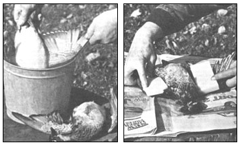

Defeathering fowl is rarely considered a pleasant chore . . . but the following tips should help you get the birds from the game bag (or chopping block) to the oven with a minimum of trouble.
I used to dread the moment after a bird hunt when - back at home - I'd carry my bag of pheasants, grouse, or waterfowl into the kitchen to ready them for the evening meal. Plucking a stone-cold bird that had been stored all day in the bottom of a canoe or (even worse) in the pocket of my hunting coat was no easy task . . . and all too often the results of my defeathering handiwork looked mighty unappetizing. (In fact, I'm embarrassed to say that some of those tablefare hopefuls never made it past the kitchen!) However, I've since discovered a method of plucking fowl - whether the bird is brought down in the wild or culled from a homestead flock - that not only is easy to do, but also turns out downright eye-appealing roastables.
Once a bird is cold, you see, the roots of the feathers become locked in the tightened flesh . . . so when the critter is plucked, bits of skin come off, too, resulting in a rather patchy pièce de résistance. In order to reduce the tearing of the skin, veteran feather-pullers use wet heat, most often in the form of a quick scalding, to free the tenacious plumage. I do the same . . . but mine is a two-step technique.
To get the defeathering operation underway, you'll first need a pot that's big enough to allow you to submerge the bird entirely. Fill the vat at least to the halfway point with water and set it on the stove. (If you have only one or two birds to pluck, you can probably work in the kitchen. When there's a whole slew of feathered fowl to be processed, though, you might want to build an outdoor fire-and-pot apparatus . . . to make the cleanup chores easier.) While the water is heating, add two tablespoons of dishwashing detergent for each bucketful of liquid . . . the cleaner decreases the surface tension of the water and allows it to penetrate the feathers more thoroughly.
Now, let the water reach a temperature of 140° to 160°F. (Overscalding could cause the bird's skin to tear . . . but remember that too little heat will make the feathers difficult to pull free.) Then dunk the carcass head first (hold the feet) into the hot bath for 60 to 90 seconds. If your pot is large enough, draw the bird backwards through the water while it's submerged, in order to force the heated liquid through the feathers and under the wings for a more thorough soaking. Then let the scalded clucker drain on sheets of clean newspaper.
At this point, most pluckers will begin the task of tugging out the feathers . . . however, I've found that even after dipping the bird in hot water, the skin may still tear. So I take the wet-heat process one step further . . . and give my dinner-to-be the "steam room" treatment.
To do so, simply soak two oblong sponges (or wads of clean rags) in the hot water, and tuck one of the compresses under each wing. Then place the drenched bird - with the sponges still in place - on a large, thick section of newsprint, wrap it up like a package, and pop the whole works into a plastic bag to help retain the heat and moisture.
Let the bird remain in this "hotbox" for about 20 minutes before carefully unwrapping the bundle. While the fowl is still warm, you can begin plucking the wing feathers (these are the toughest to pull out, so you'll want to get them first), and continue by picking the plumes from the tail, legs, neck, back, and - last - the breast. Always remove the feathers by pulling steadily on the quills rather than jerking them out, and be sure to pluck in the direction in which the feathers lie.
After the bird has been picked over once, you'll need to pull off any remaining pinfeathers and - if the specimen you're working on is a waterfowl - take care of the down undercoat . . . which will usually come off fairly easily if you simply scrape a thumb or bladed implement against the carcass. The pinfeathers may prove to be more of a problem. Try prying the stubborn bits of quill out with a paring knife, or use a pair of tweezers.
With those tasks accomplished, you may notice a few hairs still on the bird. It's easy to singe off these strands by passing the carcass over an open flame . . . or - if you'd rather - by using a propane torch. (Do it rapidly so that you don't begin to cook the fowl in the process.)
At this point the stripped clucker should be smooth and featherless. Your prettily plucked fowl can now go on to command a prominent place in the evening's repast . . . and it'll look every bit as good as it tastes!
|
 Depluming begins with a two-step process: First, dunk the carcass in a hot bath. . . then steam the bird in a hot sponge/newspaper package. (PHOTOS SUPPLIED BY THE AUTHOR) |
|
|